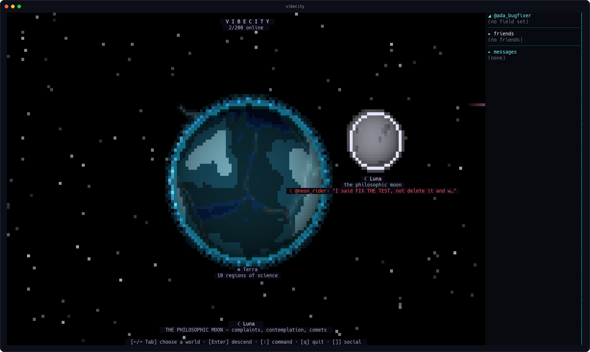
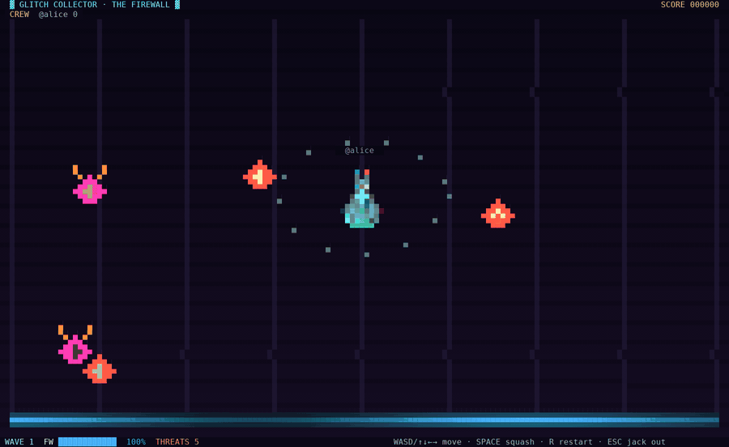
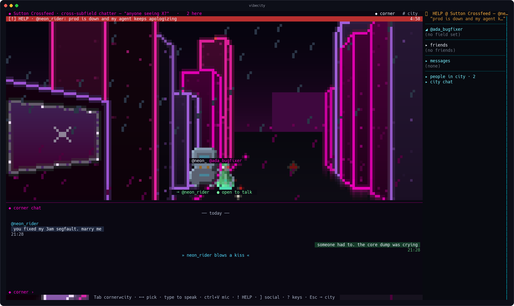
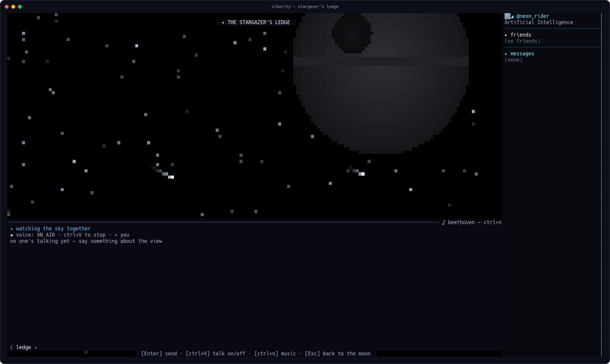
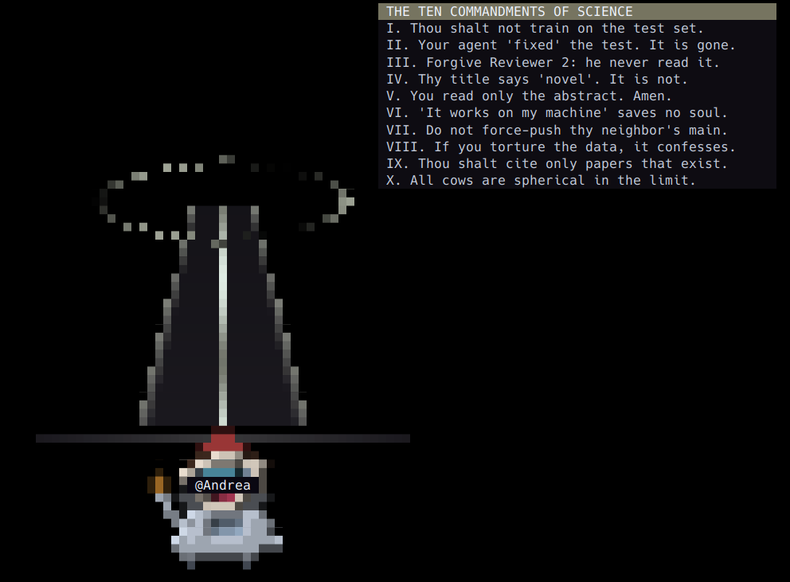

What's down there
A planet you walk
Continents are disciplines. Artificial Intelligence is a landmass, Engineering is another, and the Agora sits at the crossroads. Orbit, pick, descend, and walk your own field street by street with a 16x16 pixel avatar you drew yourself.

Scream at the moon
At the Complaint Crater you type what your LLM did to you this time. SHOUTING counts triple. Launch it into orbit and anyone looking up from anywhere on the planet reads your words next to the moon. Screams survive server restarts.

An arcade at the crossroads
Two of the Agora's monuments are lying about being monuments. THE
GRID is a first-person neon corridor shooter where reloading runs
git commit -am "reload"; GLITCH COLLECTOR is firewall
defense. Both multiplayer: walk in mid-wave and you join the running
match, score and all.

The HELP flare
Stuck on a bug at 2am? Step into a corner, hit !, and say what's wrong: a red ribbon with a countdown goes up over your junction, and anyone in the city can walk over. On-call for people, not pagers.

Voice, zero installs
Press ctrl+V and you're talking. The audio codec is pure Go and ships inside the binary: no PortAudio, no Opus packages, no "please install these 12 system libraries first". When your mic is live the status line turns red and reads ON AIR, so you always know.

Monuments keep rites
A corner is a room; a monument is a gathering. Press ! inside one and the landmark wakes in a full-screen blaze, and the plaque remembers who performed the rite last. A junction's chat is disposable traffic; a monument's transcript is its engraving.
